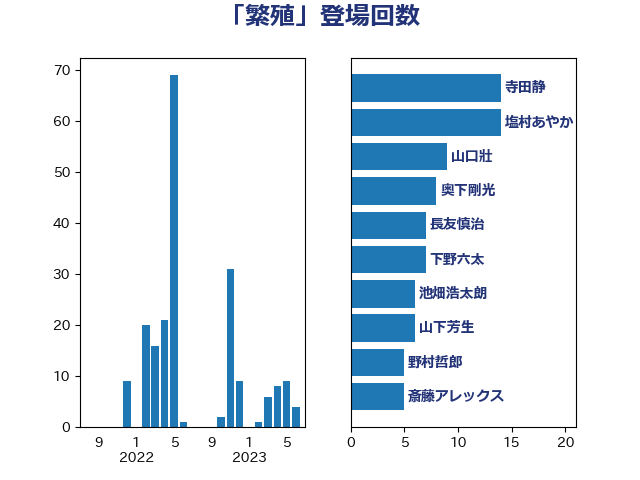

単語「繁殖」

| 寺田静 | 無所属 | 22 回 |
| 塩村あやか | 立憲民主党 | 14 回 |
| 小泉進次郎 | 自由民主党 | 14 回 |
| 田村貴昭 | 日本共産党 | 12 回 |
| 山口壯 | 自由民主党 | 9 回 |
| 篠原孝 | 立憲民主党 | 9 回 |
| 山下芳生 | 日本共産党 | 8 回 |
| 串田誠一 | 日本維新の会 | 7 回 |
| 奥下剛光 | 日本維新の会 | 7 回 |
| 田名部匡代 | 立憲民主党 | 6 回 |
| 斎藤アレックス | 国民民主党 | 5 回 |
| 三木亨 | 自由民主党 | 4 回 |
| 福島みずほ | 社会民主党 | 4 回 |
| 長友慎治 | 国民民主党 | 4 回 |
| 青木愛 | 立憲民主党 | 4 回 |
| 渡辺創 | 立憲民主党 | 3 回 |
| 漆間譲司 | 日本維新の会 | 3 回 |
| 緑川貴士 | 立憲民主党 | 3 回 |
| 野上浩太郎 | 自由民主党 | 3 回 |
| 中野洋昌 | 公明党 | 2 回 |
| 住吉寛紀 | 日本維新の会 | 2 回 |
| 岡本あき子 | 立憲民主党 | 2 回 |
| 平沼正二郎 | 自由民主党 | 2 回 |
| 池畑浩太朗 | 日本維新の会 | 2 回 |
| 清水貴之 | 日本維新の会 | 2 回 |
| 神谷裕 | 立憲民主党 | 2 回 |
| 竹谷とし子 | 公明党 | 2 回 |
| 菅家一郎 | 自由民主党 | 2 回 |
| 西野太亮 | 自由民主党 | 2 回 |
| 青山大人 | 立憲民主党 | 2 回 |
| 高橋光男 | 公明党 | 2 回 |
| 宮崎雅夫 | 自由民主党 | 1 回 |
| 庄子賢一 | 公明党 | 1 回 |
| 徳永エリ | 立憲民主党 | 1 回 |
| 池田佳隆 | 自由民主党 | 1 回 |
| 浜田聡 | NHK党 | 1 回 |
| 田村憲久 | 自由民主党 | 1 回 |
| 石井苗子 | 日本維新の会 | 1 回 |
| 石川香織 | 立憲民主党 | 1 回 |
| 空本誠喜 | 日本維新の会 | 1 回 |
| 笹川博義 | 自由民主党 | 1 回 |
| 萩生田光一 | 自由民主党 | 1 回 |
| 葉梨康弘 | 自由民主党 | 1 回 |
| 藤木眞也 | 自由民主党 | 1 回 |
| 辻清人 | 自由民主党 | 1 回 |
| 須藤元気 | 無所属 | 1 回 |